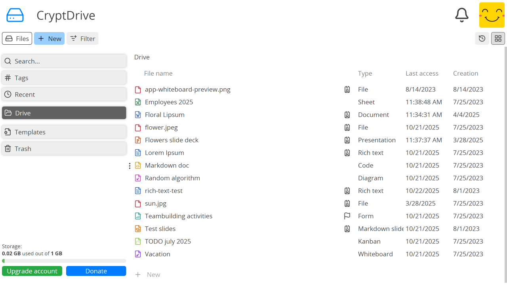

CryptDrive#
CryptDrive se utiliza para almacenar y gestionar documentos. Para los usuarios registrados, es la página de inicio predeterminada en CryptPad. También es accesible desde las otras páginas:
Haz clicken el logo en la esquina superior izquierda.Menú de usuario (avatar en la esquina superior derecha) > CryptDrive.
Mostrar#
Los documentos en la unidad se pueden mostrar como una lista o una cuadrícula. Para cambiar entre las dos vistas, usa el botón a la derecha de la barra de herramientas de la unidad (debajo del avatar).
En el modo de cuadrícula, CryptPad puede mostrar miniaturas de los documentos. Estas se pueden activar en la configuración del usuario.

CryptDrive en vista de cuadrícula.#

CryptDrive en vista de lista.#
Gestionar documentos#
Carpetas#
Usuarios registrados
Hay varias formas de crear carpetas en la unidad:
Nuevo en la barra de herramientas > Carpeta.
Haz click derecho> Nueva carpeta.Ctrl + e > Carpeta.
Una vez que se crea una carpeta, los documentos se pueden añadir arrastrándolos desde la unidad. También puedes arrastrar y soltar archivos de una carpeta a otra. Usa el conveniente árbol de la barra lateral izquierda para soltar el archivo en el destino deseado.
Para cambiar el color de una carpeta:
Haz click derechoen la carpeta > Cambiar el color.
Para compartir una carpeta y todo su contenido:
Haz click derechoen la carpeta > Compartir. La carpeta se convertirá en una carpeta compartida.
Cambiando el nombre#
Hay dos formas de cambiar el nombre de los documentos en CryptPad. Una cambia el título del documento para todos los usuarios y la otra lo cambia solo en tu unidad.
Para cambiar el título de un documento para todos los usuarios que lo tienen en su unidad:
Haz clicken el título o en el botón de la barra de herramientas del documento.Escribe el nuevo título.
Guardar con el botón o la tecla :kbd: Enter.
Para cambiar el título de un documento solo en tu drive:
Haz click derechoen el documento en tu unidad > Renombrar.Escribe el nuevo nombre.
Guardar con la tecla Enter.
El icono indica que el título de un documento es diferente en tu drive que para otros usuarios.
Borrando#
Hay dos formas de eliminar un documento en CryptPad:
Remover un documento significa que deja de aparecer en la unidad pero permanece en la base de datos. El documento seguirá en la unidad de otros usuarios que lo tengan almacenado. El documento se puede recuperar en la unidad utilizando la historial.
Destruir un documento lo elimina permanentemente de la base de datos. El documento se borra de todos las unidades donde esté almacenado y no se puede recuperar utilizando el historial de la unidad. Propietarios de documentos
Nota
Si un documento no está almacenado en ningún drive, se destruye de la base de datos después de 90 días (la duración de este retraso puede ser configurada por los administradores del servicio).
Para remover un documento de CryptDrive.
Arrastra el documento desde el drive hacia la Papelera.
Haz click derecho> Mover a la papeleraSelecciona el documento y presiona la tecla Del.
Para remover el documento de CryptDrive sin almacenarlo primero en la papelera:
Haz click derecho en el documento teclas :kbd: Shift + Supr.
Para vaciar la papelera:
Haz click derechoen la pestaña Papelera a la izquierda del drive > Vaciar la papelera.Haz clicken la pestaña Papelera para acceder a la papelera > Vaciar la papelera.
Si eres un propietario de algunos documentos en la papelera cuando la vacías, se te pedirá que decidas si quieres removerlos o destruirlos.
Para destruir un documento sin almacenarlo primero en la papelera:
Haz click derechoen el documento en el drive > Destruir. Propietarios del documento
Nota
Una vez destruidos, los documentos aún pueden aparecer en los drives de otros usuarios. Una vez que un documento ha sido añadido a la unidad de alguien, la naturaleza encriptada de CryptPad hace imposible recuperarlo. Por lo tanto, un documento destruido puede seguir apareciendo en la unidad de un usuario si lo habían almacenado previamente. Sin embargo, no podrán abrir el documento.
Historial#
El historial de la unidad se guarda y se puede restaurar si es necesario. Desde la unidad:
Haz clicken el botón de historial en la esquina superior derecha (debajo del avatar).Utiliza las flechas y para avanzar a través del historial.
Restaura la versión mostrada con Restaurar, o sal del historial sin restaurar con Cerrar.
Para ahorrar espacio de almacenamiento, el historial de CryptDrive se puede eliminar en la configuración del usuario.
Nota
Las carpetas compartidas tienen su propio historial, separado del historial de CryptDrive. Restaurar el historial de la unidad no afecta a las carpetas compartidas; de manera similar, el historial de una carpeta compartida se puede restaurar sin afectar al resto del drive.
Etiquetas#
Usuarios registrados
Agrupa documentos en múltiples categorías usando etiquetas. Tus etiquetas no son visibles para otros usuarios.
La pestaña Etiquetas en la unidad muestra todas las etiquetas en uso y los documentos asociados a cada una.

Para agregar o eliminar etiquetas de un documento:
Desde la unidad:
Haz click derechoen el documento > Etiquetas.Desde un documento: Archivo > Etiquetas.
Para administrar etiquetas para varios documentos:
Selecciona los documentos con Ctrl `+ ``Click` en CryptDrive.
Haz click derechoen los documentos > Etiquetas.
Solo se muestran las etiquetas asignadas a todos los documentos seleccionados. Cualquier etiqueta añadida y/o eliminada se aplica a todos los documentos seleccionados.
Plantillas#
Usuarios registrados
Las plantillas proporcionan puntos de partida reutilizables para crear documentos de estructura similar, por ejemplo, facturas, membretes, informes, etc.
Para crear una plantilla:
Selecciona la pestaña Plantillas en la unidad.
Nuevo en la barra de herramientas.
o
En un documento existente: Archivo > Guardar como plantilla.
o
Crea un nuevo documento.
En la pantalla de creación selecciona Nueva plantilla.
Para usar una plantilla:
Selecciona la plantilla al crear un nuevo documento.
En un documento existente: Archivo > Importar una plantilla. Ten en cuenta que esta opción reemplaza el contenido del documento con la plantilla.
Storage quota#
When reaching the storage limit, you can still edit existing documents but you cannot create new ones.
To reclaim storage space you can clear:
The drive history
Documents history, from their properties
If necessary, an administrator can easily raise the storage limit of a specific account.
Nota
Some CryptPad instances offer paid plans with more storage space.